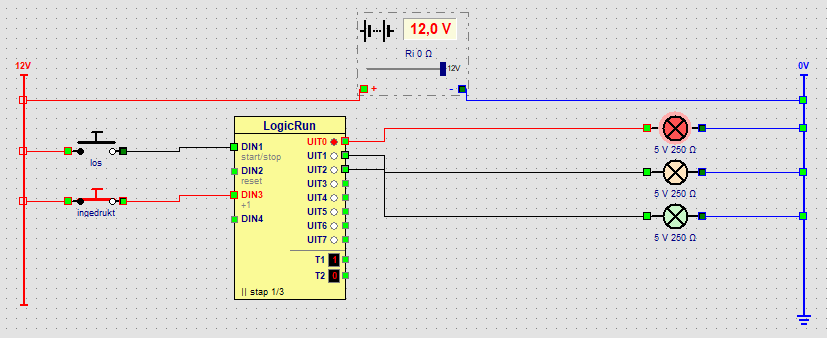

Learning path › Advanced › Lesson 12 of 42 · Level: Advanced

Double-click the block: the LogicRun window opens. The program has three steps:
| Step | On | time x | Duration (step time 500 ms) |
|---|---|---|---|
| 1 | UIT0 (red) | 6 | 3 seconds |
| 2 | UIT2 (green) | 6 | 3 seconds |
| 3 | UIT1 (amber) | 2 | 1 second |
Because Repeat is on, the program starts again at step 1 after step 3.
Make the green light stay on for 5 seconds instead of 3. Then add a pedestrian light: a green lamp on UIT3 that is only lit when the traffic light is red.
With a step time of 500 ms, 5 seconds is 10 times the step time: set time x of step 2 to 10. In step 1 (red) also click the circle of UIT3. Put a 5 V lamp with two terminals on the panel (right-click › Lamp voltage › Lamp for 5 V (also on a gate)) and turn it into a green lamp (right-click › Colour › Green lamp). Run a wire from UIT3 to the left terminal of the lamp, and from the right terminal of the lamp to the − rail. That way one program controls several lamps at the same time.